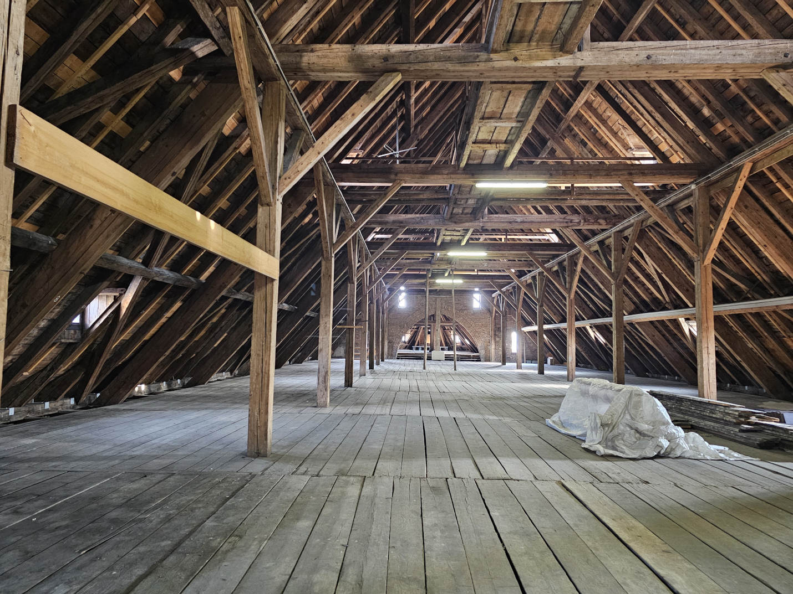
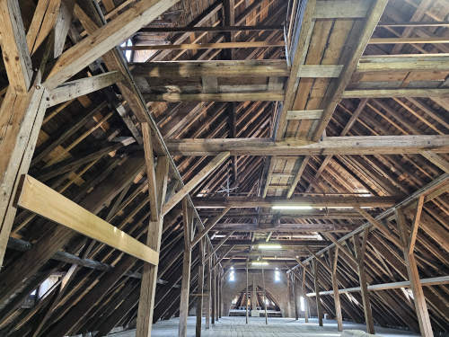
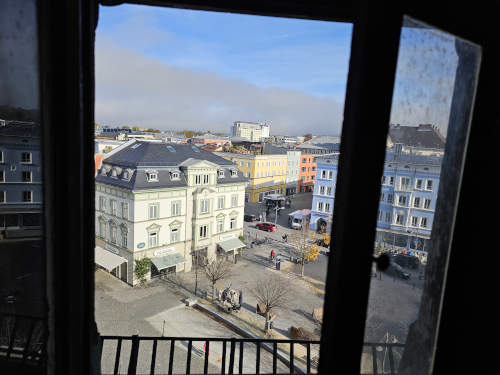
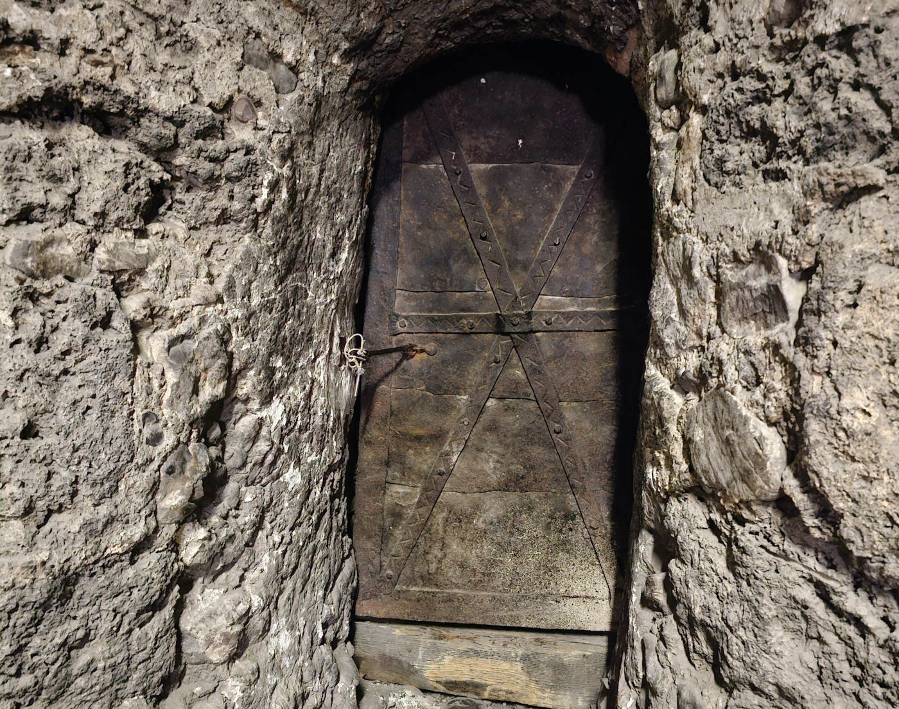
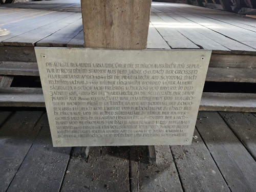
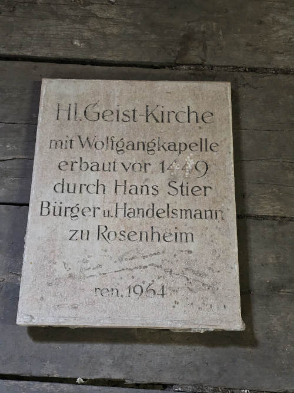
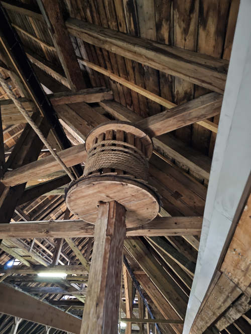
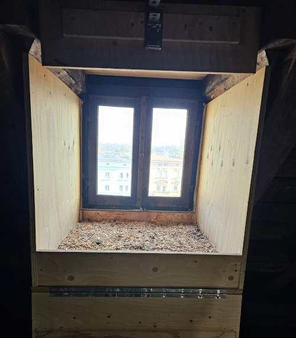
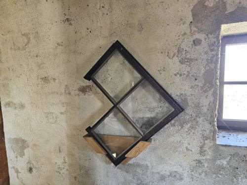

The Dachboden reveals the craftsmanship of the timber frames—quiet, spacious, and peaceful.
Quick facts
MaterialMostly wood (beams, frames, flooring)
MoodCalm, airy, and reflective
NotableOld door, engravings, bird-friendly windows
A small reflection
Matthew 7:13
The old cast iron door reminds us of the Biblical phrase “enter through the narrow gate”. The Dachboden’s entry feels narrow, then suddenly opens into a wider space.
That contrast makes the experience a rewarding one.
1) Structure and craftsmanship
The Dachboden is defined by its timber geometry: beams, joints, and frames that carry the roof is all made from wood, without using much metal. Even when the space is mostly empty, the structure itself becomes the main exhibit.
The smell of wood, the silence and the wide space together create a unique feelings.
According to the organizer, wood was chosen not only for aesthetics, but also for practical strength-to-weight
performance and durability across centuries.
Dachboden also appears to be a place where a peaceful pause can be made after already climbing several floors.
A little rest while walking through the place, makes one prepared for the upcoming events.

Angled frames and long sightlines make the Dachboden feel larger and spacious.

One can already see the beautiful town from the windows of the attic.
2) The entry and “narrow gate” feeling
The entry point is an old iron door set into thick stone. Its proportions and material hint at medieval
building methods - compact, defensive, and built for endurance.
After passing the narrow entry, the space opens. This immediate expansion creates a strong contrast of
“compression and release” in how visitors experience the place.

The old entry door from 1300s: a small threshold that changes how you perceive the space beyond it.
3) Inscriptions and small artifacts
There is a special stone plate with historical German writing (known as Frühneuhochdeutsch). The stone plate describes the chonological history of the church and the tower. It reminds us of the older time when writing special texts on stone plates was a respectable practice. Even without reading
every line, the typography and material presence communicate age and seriousness.
Nearby, additional plaques and smaller elements create a compact “micro-museum” inside the attic.

Stone plate
A formal record engraved in stone, written in Frühneuhochdeutsch.

Plaque
A historical stone plate referring to the Church of the Holy Spirit.

Mechanisms
Remnants of practical systems used during church rituals and maintenance.
4) “Falconhaus” and respectful coexistence
There are two falcons who live in the Church (one nest in the attic, another nest is even above, near the clock). The organizers made considerable efforts to make the birds feel welcome and at home. Careful window design and nesting
arrangements ensures free movement of the birds while keeping the building safe, specially in the wet seasosn.
This detail shows a thoughtful balance of heritage preservation, building safety, and respect for living nature
in the same place.

Comfortable and safe nest of the Falcon at the attic.

Window setup with a deliberate gap, ensures the free movement of the bird and building safety in wet seasons.
Feeling curious?
Book a tour and experience the Dachboden as a transition space between city noise and the tower heights.
Available from Easter Sunday to the end of October.